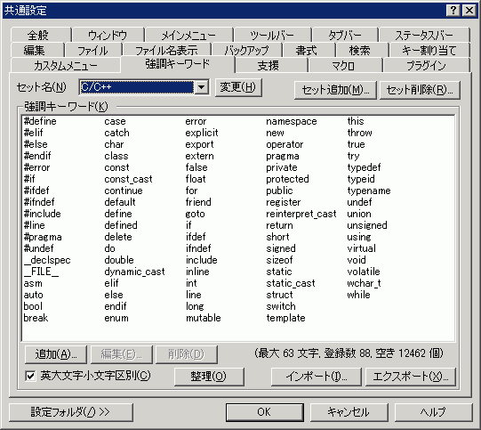

共通設定 『強調キーワード』プロパティ
『全般』
『ウィンドウ』
『メインメニュー』
『ツールバー』
『タブバー』
『ステータスバー』
『編集』
『ファイル』
『ファイル名表示』
『バックアップ』
『書式』
『検索』
『キー割り当て』
『カスタムメニュー』
『強調キーワード』
『支援』
『マクロ』
『プラグイン』

キーワード設定の概要
- キーワードのセットという概念がある。
- キーワードのセットごとに、キーワードのリストを持つ。
- キーワードのセットごとに、大文字小文字区別か否かを設定する。
- ファイルタイプごとに、どのキーワードセットを参照するのか設定可能（タイプ別設定 『カラー』プロパティ）。
- 強調キーワードには英字、アンダースコア、数字、"#"、"$"、"@"、"\"のいずれかしか使えません。それ以外の文字を使うと、単語の区切りが正しく認識されません。（将来、改善する予定ですが・・・。）
- 複数単語からなるキーワードが使えるようになりました(2.0.0.0 以降)
- 日本語のキーワードが使えるようになりました(2.0.6.0 以降)
[セット名]コンボボックス
現在登録されているセットから、キーワードを編集したいセットを選択します。
[変更]ボタン
強調キーワードのセット名を変更します。
[セット追加]ボタン
新しいセットを作成します。全部で100セットまで登録できます。
[セット削除]ボタン
現在選択されているセットを削除します。
[強調キーワード]リスト
現在選択されているセットの、キーワードを一覧表示しています。
リストで選択されているキーワードをもう一度クリックすると、リスト中で直接編集できます。
リストの中のキーワードをダブルクリックしても、編集できます。
リストで項目を選択した状態で [Space] キーを押すと、キーワードを編集できます。
リストで項目を選択した状態で [Del] キーを押すと、キーワードを削除できます。
[追加]ボタン
新しいキーワードを追加します。1セットあたりに追加できるキーワードの数は、[削除]ボタンの右側に表示されます。
[編集]ボタン
リストで選択されているキーワードを編集します。
リストで項目を選択した状態で [Space] キーを押しても、キーワードを編集できます。
[削除]ボタン
リストで選択されているキーワードを削除します。
リストで項目を選択した状態で [Del] キーを押しても、キーワードを削除できます。
■キーワードの英大文字小文字区別
強調キーワードを捜すときに、英大文字小文字区別をするかどうかを設定します。
現在選択されているセットの単語すべてに影響します。
[整理]ボタン
強調キーワードとして使用できないキーワードを削除します。
[インポート]ボタン
単語リストファイルを読み込んで、キーワードの一覧へ「追加」します。
- 重複したキーワードは追加されません。
- 長さが63文字を超えるキーワードは、63文字(サロゲートは1文字で2文字換算)に切り詰められて追加されます。
- 各セットの使用状況によりますが、1セットあたり最大で15000個までのキーワードを登録できます。
- パッケージ同梱のキーワードサンプルも参考にして下さい。
| CPP.kwd | C/C++のキーワードのサンプル |
| PLSQL.kwd | PL/SQLのキーワードのサンプル |
| HTML.kwd | HTMLのキーワードのサンプル |
[エクスポート]ボタン
現在選択されているセットのキーワードを、単語リストファイルとして書き出します。
[設定フォルダ]
設定フォルダボタンは、ユーザー別設定を行っている場合のみ表示されます。